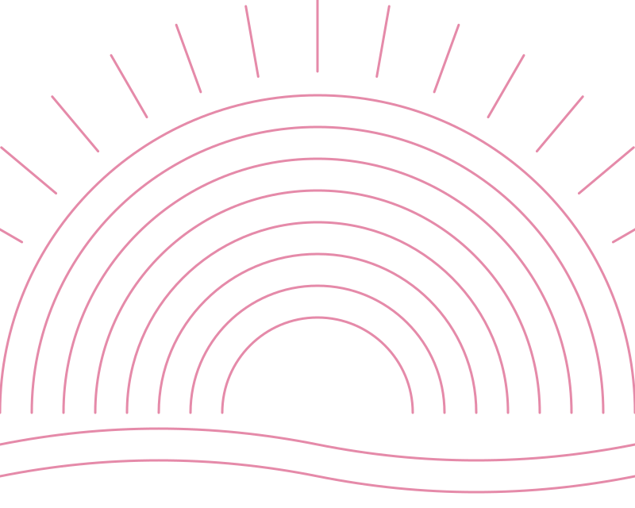
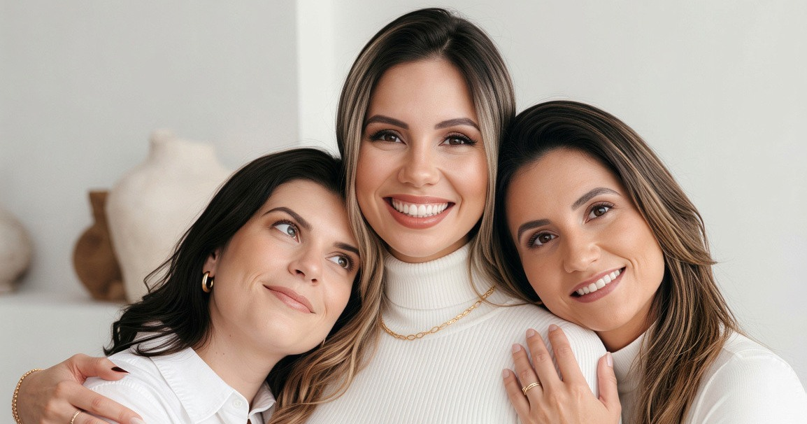
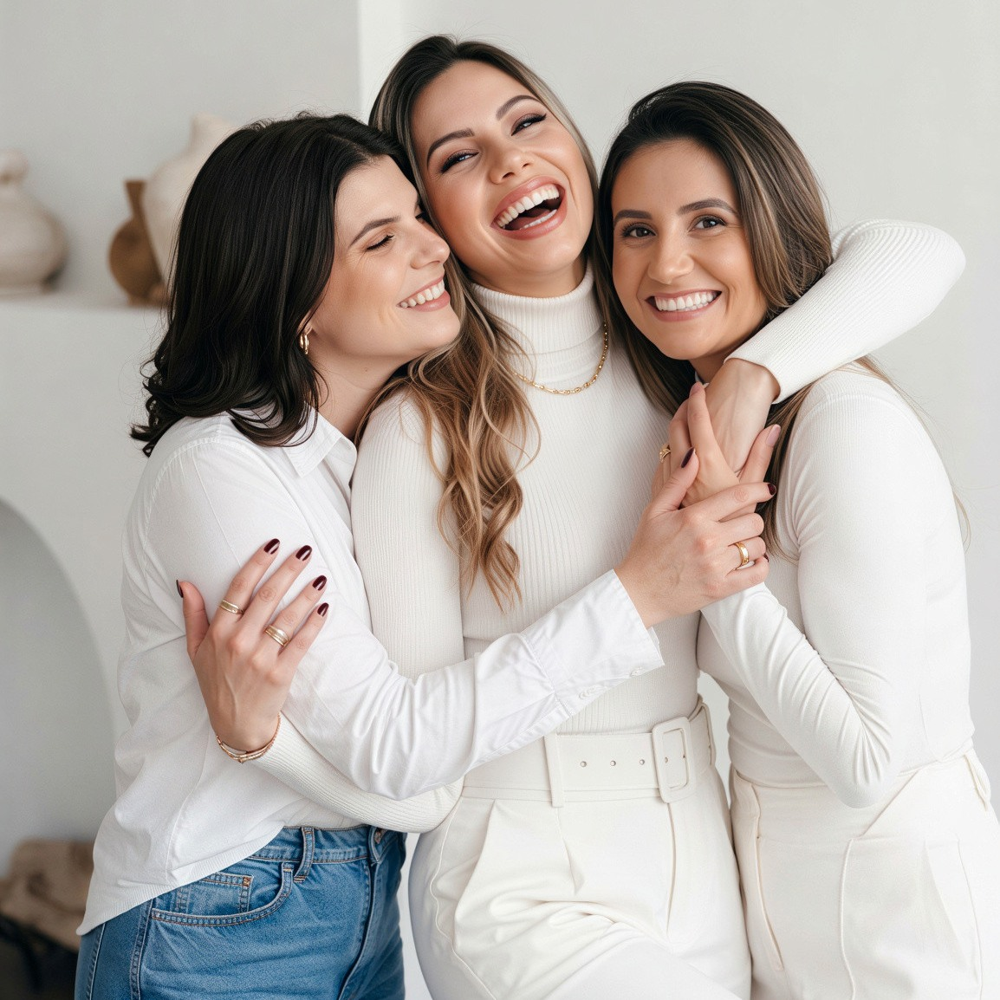
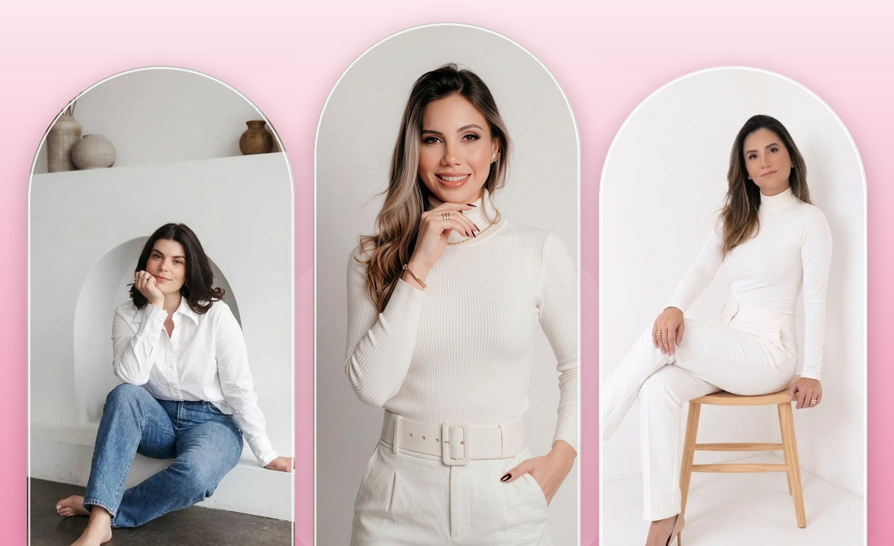

Casa Aurora · Assistência ao parto
Seu parto, do seu jeito, com quem conhece a sua história.
Somos três obstetras dedicadas ao parto respeitoso e ao cuidado individual, sempre baseado em evidências científicas.

Quem somos
Cuidado que começa na escuta.
Acreditamos que um bom parto nasce de boas conversas. Por isso, cada escolha é feita junto com você.
Acompanhamos a gestação do primeiro exame ao primeiro colo, sempre com a mesma equipe.
Equipe Casa Aurora
Diferenciais
Uma assistência feita de vínculo e segurança.

Como trabalhamos
Do pré-natal ao nascimento, com a mesma equipe.

Quem pode ser atendida?
Gestantes que fazem o pré-natal com uma de nós.
Atendemos gestantes que fazem o pré-natal com uma das três médicas. Para nós, o vínculo é parte essencial do cuidado.
A equipe
Três médicas, um só cuidado.
Nos bastidores do cuidado
No consultório e na sala de parto.
Dúvidas frequentes
Respostas rápidas.
